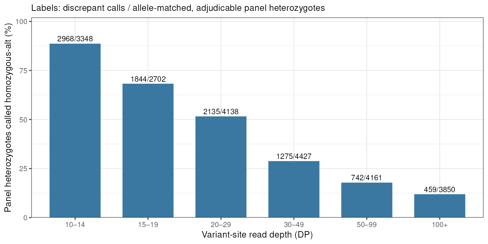
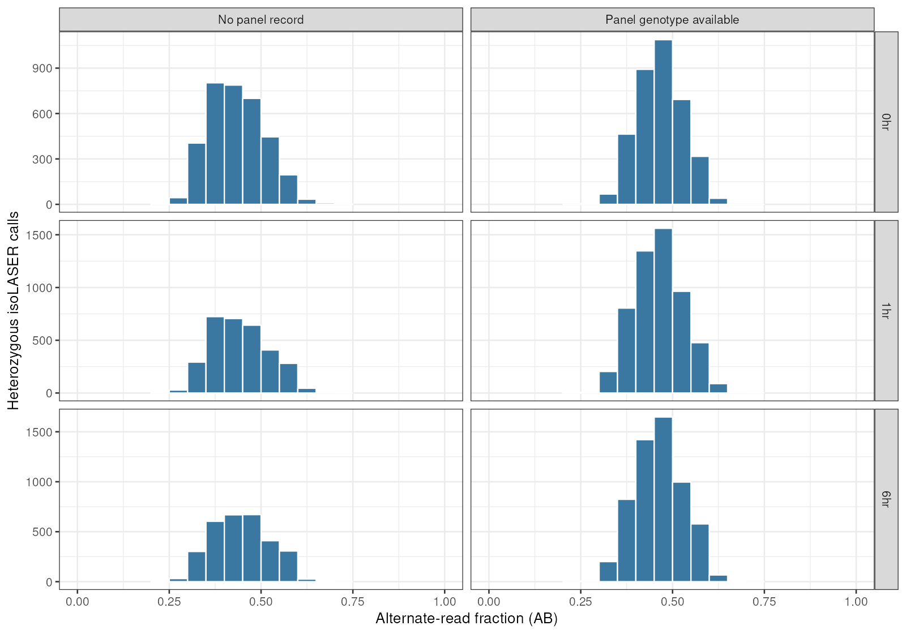

This reproducible R Markdown
analysis was created with workflowr (version
1.7.1). The Checks tab describes the reproducibility checks
that were applied when the results were created. The Past
versions tab lists the development history.
The R Markdown file has unstaged changes. To know which version of
the R Markdown file created these results, you’ll want to first commit
it to the Git repo. If you’re still working on the analysis, you can
ignore this warning. When you’re finished, you can run
wflow_publish to commit the R Markdown file and build the
HTML.
Great job! The global environment was empty. Objects defined in the
global environment can affect the analysis in your R Markdown file in
unknown ways. For reproduciblity it’s best to always run the code in an
empty environment.
The command set.seed(20260908) was run prior to running
the code in the R Markdown file. Setting a seed ensures that any results
that rely on randomness, e.g. subsampling or permutations, are
reproducible.
Great! You are using Git for version control. Tracking code development
and connecting the code version to the results is critical for
reproducibility.
The results in this page were generated with repository version
e6f926a.
See the Past versions tab to see a history of the changes made
to the R Markdown and HTML files.
Note that you need to be careful to ensure that all relevant files for
the analysis have been committed to Git prior to generating the results
(you can use wflow_publish or
wflow_git_commit). workflowr only checks the R Markdown
file, but you know if there are other scripts or data files that it
depends on. Below is the status of the Git repository when the results
were generated:
Note that any generated files, e.g. HTML, png, CSS, etc., are not
included in this status report because it is ok for generated content to
have uncommitted changes.
These are the previous versions of the repository in which changes were
made to the R Markdown (analysis/isolaser_variants.Rmd) and
HTML (docs/isolaser_variants.html) files. If you’ve
configured a remote Git repository (see ?wflow_git_remote),
click on the hyperlinks in the table below to view the files as they
were in that past version.
We compared all 22 autosomes, four donors and three
timepoints (264 runs) against the donor genotype panel. Among
35,829 adjudicable calls, 96.0% have a confirmed alternate
allele and 69.1% have an exactly matching
genotype. The main discrepancy is a panel heterozygote called
homozygous-alternate; its frequency and the cost of increasing the depth
cutoff are shown below.
What was compared?
isoLASER: completed default
--platform Nanopore runs (ont_roc), for CD_21,
CD_31, CD_36 and CD_48 at 0, 1 and 6 hours. These are the GM12878 ONT
ROC model results, separate from the GTEx-model runs.
Reference: the 100-line TOPMed-imputed genotype
panel, using the corresponding four donor genotypes and GRCh38
coordinates.
Included calls: PASS single-nucleotide variants
with variant-site depth DP ≥ 10, one concrete alternate
allele and a callable diploid genotype. The gVCF
<NON_REF> placeholder is ignored.
Counting unit: one donor × timepoint × variant.
Repeated gene-level records for that call are collapsed by retaining the
deepest record. Observations of the same variant in different donors or
timepoints are counted separately.
The 79,752 calls represent 22,128 distinct genomic variants. They are
variant calls, not splicing associations.
Matching: panel records are located by chromosome
and position, then matching reference/alternate alleles are preferred.
If there is no allele-matched record, a unique panel record at that
position can still document an allele discrepancy. Conflicting panel
records are marked ambiguous and excluded from adjudication; they do not
expand the number of calls. This affects 0 calls.
How much does the panel confirm?
An adjudicable call has an unambiguous, callable
donor panel genotype and site-level imputation R² ≥
0.8. This is the denominator for both agreement rates.
Measure
Calls
Definition
Included isoLASER calls
79,752
PASS SNVs; DP ≥ 10
Panel genotype available
39,613
49.7% of included calls
Adjudicable calls
35,829
Panel genotype available; R² ≥ 0.8
Alternate allele confirmed
34,409
96.0% of adjudicable calls
Exact genotype agreement
24,769
69.1% of adjudicable calls
Alternate-allele confirmation requires matching
reference and alternate alleles and a non-reference panel genotype.
Exact genotype agreement also requires the same number
of alternate alleles, ignoring phasing orientation. For example, panel
0/1 and isoLASER 1/1 confirm the
alternate allele but are not an exact genotype match.
Among adjudicable calls, 1,416 have a homozygous-reference panel
genotype and 25 have different alleles. These categories can overlap;
neither contributes to alternate-allele confirmation.
Main discrepancy: heterozygotes called homozygous
Among allele-matched, adjudicable calls with a heterozygous panel
genotype, 9,423 / 22,626 (41.6%) are called
homozygous-alternate by isoLASER.

Genotype discrepancy by variant-site read depth,
across all autosomes and samples.
Here DP is the number of reads overlapping the variant
position in the isoLASER gVCF. It is different from the
informative-read count for a particular variant–exonic-part association
used in the allele-specific splicing screen. Thus, a variant-site DP
cutoff and a splicing-association read cutoff address different
quantities.
The discrepant calls have a median reported alternate-read fraction
(AB) of 0.58. A homozygous call therefore does not
necessarily mean that no reference-allele reads were observed.
What changes with a higher depth cutoff?
These are nested filters on the same completed variant
calls, not new isoLASER runs. The last column uses only
allele-matched, adjudicable panel heterozygotes at the stated depth; it
has a different denominator from the two agreement columns.
Minimum variant DP
Calls retained
Adjudicable
Allele confirmed (%)
Exact genotype (%)
Panel het → hom-alt (n/N; %)
10
79,752
35,829
96.0%
69.1%
9,423/22,626 (41.6%)
20
53,828
23,940
95.9%
75.8%
4,611/16,576 (27.8%)
30
40,077
17,475
95.8%
80.7%
2,476/12,438 (19.9%)
50
25,821
11,041
95.8%
83.9%
1,201/8,011 (15.0%)
100
12,754
5,222
95.8%
86.0%
459/3,850 (11.9%)
Increasing DP trades coverage for agreement in the retained subset.
It cannot recover heterozygotes missed by the original caller or restore
their contribution to phasing. These repeated donor/timepoint
observations are descriptive counts, not independent biological
replicates.
Results by chromosome and timepoint
Each row combines four donors. The table is displayed in full and can
be searched or sorted; download
the counts for further comparisons.
Column guide:Calls = retained
isoLASER calls; In panel = calls with an unambiguous
callable donor panel genotype, regardless of R² or allele match;
Adjudicable = In panel with R² ≥ 0.8. Allele
confirmed (%) and Exact genotype (%) use
Adjudicable as their denominator and the definitions above. A site
observed in two donors counts twice.
Calls absent from the panel
40,139 calls have no panel record at their position.
Another 0 have a panel record but no unambiguous callable donor
genotype. Neither group is validated by this comparison.

Alternate-read fractions among isoLASER-labeled
heterozygous calls, by timepoint and panel availability.
The histograms include only calls isoLASER labels
heterozygous, across all 22 autosomes; the vertical scales
differ between panels. Their allele fractions are conditional on this
call label and do not independently establish accuracy or mapping bias.
RNA allele fractions may also reflect allele-specific expression.
Interpretation and reproducibility
This comparison measures agreement among variants isoLASER
called. It does not estimate sensitivity, since panel variants
missed by isoLASER are not counted, and the imputed panel is not an
error-free truth set. Alternate-allele confirmation and exact genotype
agreement should both be reported because phasing depends on recognizing
heterozygous sites.
The results were regenerated from all 264 gVCFs using
8.isolaser_validation/19.validate_all_autosomes.py;
summaries and figures use
8.isolaser_validation/20.all_autosome_assets.R. The earlier
chr1/chr10-only assets are preserved separately.